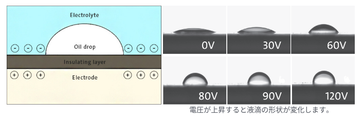

液体レンズ(Varioptic) による高付加価値レトロフィットの提案
1/100秒以下のスピードでピント調整。高速ラインを止めません。
可動部ゼロ。摩耗による粉塵が出ず、クリーンルームに最適。
モーター不要。省スペースで既存装置へのレトロフィットが可能。
「ガチャガチャ動く機械式」から「しなやかに形を変える生物的な目」への進化
Section 01
回路線幅が原子数数十個分に達する先端ノードでは、光の波長が解像度を制限する「回折限界」が最大の敵となります。
積層構造（3D）化により内部欠陥が隠蔽。これを高速にスキャンする能力が求められています。

| 課題 | 従来の組み合わせ | 次世代の戦略 |
|---|---|---|
| 回路の重なり | ピント合わせに物理的な時間がかかる | 液体レンズで全層を瞬時にスキャン |
| シリコンの裏側 | 可視光では反射して内部が見えない | SWIR（赤外線）でシリコンを透かす |
| 微細な歪み | メカの振動で画像がボケる | 固定された液体レンズで精密撮像 |
Section 02
電圧印加により水溶液と油の境界面の形を変化させ、ミリ秒単位でピントを調整します。


印加電圧により接触角を精密に制御し、電圧を除去すれば瞬時に元の形状に戻る「完全可逆」なプロセスです。
Section 03
従来の光学系では、DoFを得るために「絞り込む」必要があり、画像が暗くなる致命的な欠点がありました。
絞りを開放したまま、ms単位でピントを高速スキャン。明るさを犠牲にせず空間全体を瞬時に把握します。


屈折力を流しながら連続撮影を行うことで、待機時間を完全排除。あらゆる高さの対象物をオンザフライで解析可能です。
※屈折力が変化している最中も、波面収差が低く一定に保たれています。